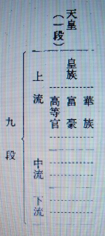
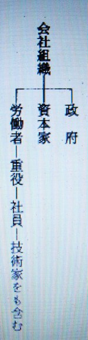

未来予想 ４
明主様御講義 「光明世界の建設 弥勒の世」 （昭和10年8月25日発行）
真の世界
「真の世界の実現は今までは理想としてはいたのであるが、その完成は出来得べくもなく、
又時が至らなかったのであるが、観音会がいよいよ立ってこれを実現するのである。
大体の目的
この大光明世界建設の目的は彼岸を知らせる事である。
今までの仕事や運動はステーションなしの向う見ずに進んでいたので、
いつ目的彼岸に到着するやも知らずに乗っていたと同じである。
本当のものが出来なかった為である。
弥勒の世の政治
弥勒の世の政治はどうかと言うと、政治とは社会の構成なのである。社会は三段に分類される。

この様に三段となり、その又一段が三段になり、九段となり、天皇によって統治される事となるのである。
この九段の階級に、今一段天皇の御位置を加えて十段となるのである。
十は足りる完成になるのである。
昔の殿様時代の城下町はこの点によく似ている。
議会は弥勒の世にもあるが、やはり三段となる。
上院 上流各種代表者一人ずつ出る。
中院 中流 〃
下院 下流 〃
代議士はこの階級の職業から組合の組合長的人物（その級において職業の代表者の事に当る）が代議士となる。
人数も組合の人口により代議士の数がきまるのである。
組合の代表者、学校の教授もその階級毎に各代表者一人というごとく、新聞記者何人から一人という様なものである。
今日の代議士には弁護士が一番多い。
実際的専門知識のある者がいない為、何か変った問題に出合うと、専門家に聞いたり視察に出かけたりしてやっている。
百姓や商人の代表者に弁護士が出てくるから、この様な矛盾を生ずる問題が起ると、各種の専門家に聞き党首脳部に聞き、それを幹部に報告するという様な有様である。
これでは一部的であるから駄目である。
これが専門家から出る代議士ならば、各々皆内容が判っているから非常に宜しいのである。
総理大臣は一番肝心であるが、現在の日本は元老が日本の代理として選んでいる。
立憲政体にはこの様なことはないのであるが、伝統的なものである。
現在は西園寺公がこの御役であるが、この西園寺公がこの人が良いと言えば良いのである。
弥勒の世となると、神人という神の代理を行う人で、元老の代りに神人が選定して天皇陛下の勅許を仰ぐのである。
これならば神に通ずる為に一点の誤りもないのである。今日日本の総理大臣の平均勤務年限は二ケ年位で、米国大統領は四年位なれども、今度弥勒の世には定まっていないのである。
換える時には神様から御命じになるのである。
軍備、警察、裁判所、病院、花柳界等は無くなる。
地獄的なものは皆無くなるのである。
発達するものは交通で、東京からアルプスの山までも汽車が通ずる様になり、もっと動揺のない立派な汽車となる。
芸術、大建築等も盛んに起る。
建築は地震がない為非常な大建築が出来る。
教育も発達する。教育は大学、中学、小学三段となり、三年宛（ずつ）を以て終了して上級へ進むのである。
英、独語等外国語を習う必要がなくなる為、三年宛で良いのである。
小学校も十二歳から入る様になるのだ。
現在のように七八歳で学校へあがると子供の発育が止るのである。
幼年労働者の体躯が発達しないのを見ても、又柔道を子供の時からやっている子供の背丈が延びないのを見ても良く解る。脳力も早くからやらせると智慧が発達しなくなって来る。
人間は霊感が発達しなければいけないが、今の人は霊感がない。
これは早くから教育された為で、霊感のある人は学問のない人に多いので良く解る。
今の上層の人が霊感がない為、何か事が起って来てから対策をするのであるが、これは霊感を持たん為なので誠に情けないものである。
九ケ年にして大学を終るのであるが、これで充分なのであって、日本では外国語は習わんでもよいのである。
日本語が世界共通語になるからである。九ケ年で今の大学の先生よりずっと偉くなる。
経済も非常に変る。産業組織も変るのである。
近来統制経済という事をいわれるが、これは観音運動の準備なのである。
各産業が合同されるのである。事業は事業で、皆同一種類は合同して一つになるのである。経営方法は左の三段に分類される。

この様に三分され、利益もまた同様三分されるのである。
資本主義も社会主義も官営も入っている。
今日行われている社会機構は全部入っている。
これより外に良法はないと思う。
これで行けば現在苦しんでいる様な納税不払等の心配もなく、税金は全然不用である。
利益の三分の一とれるからである。
資本家には又義務がある。
資本家はこの利益は使い切れんからこの余裕ある金で事業なれば自己的思想が無くなるから、愛と慈悲が出て自発的に金を出して社会公共事業に尽力するのである。
貨幣は全部紙幣となる。なぜなればこの時代は金が出過ぎる程出る為で、金銀は装飾に使用するものとなる。
資本家が色々の社会施設やら人々の慰安の為に、幾多の公会堂、演芸場等が出来る。
公演劇場を造り、労働者に慰安の為ただ見せ、月一回位は施行させる。
住みよい家を造って労働者に住わせる等と、非常に資本家は公共の為に尽すのだ。
労働時間も三時間ないし五時間働けばよいのである。
今の八時間労働の半分は軍備に使用されているのであるのを見ても、軍備を必要としない光明世界にては今まで程働くことはいらぬ。
八時間働いた時より反って労働者までが豊かになるのである。
現在の社会では人間は喰う為に働くだけであるから、これは決して神様の御意志ではないのである。」 （「観音講座 第五講座」より）
明主様御講義 「光明世界の予想」 （昭和10年9月5日発行）
「光明世界になった時の都市構造は左の図解の様になる。

光明世界になった時の風俗、都市、農村及刑罰の点をお話する。
都市は住宅地、商業地、工業地等と分類され、学校でも大学なぞは中央に近い所に建築される。
この時代になると光の発明が出来てくる。
これは電気の様な灯火の事である。
光そのものゝ本体は未だ不明であるが、観音力によりて発明される様になるのである。
この灯火は神様からお知らせの事で間違いのない事だが、一町村に一ケ所、アーク灯の様なものを建てれば、普通は外に灯火は要らん事になるのであるが、一軒の家に一つ位つける様になるだろうが、これは余り必要を感じないのである。
街路も噪音が無くなる。今の舗装工事をするのであるから極く静かになる。
自動車を走らすのにガソリン等使用せず、鉱石で動かすのである。
従って臭気もなくなる。
街路には木や草を沢山植える。
今も各地で行っているが、まだまだ違うのである。
果物の木を並木に植えるのである。林檎、柿、無花果（いちじく）、柘榴（ざくろ）等である。人道は葡萄（ぶどう）の棚になる。
草花も人道と車道の間に作るから、とても綺麗だ。
これらは余り永い事ではなく近い将来に出来る。
交通機関も非常に発達し、富士山とか日本アルプスにも電車位のものが出来て楽に登れる様になる。
この電車も今よりもっと綺麗である。旅行も大層盛んになる。
労働者でも月に一度位旅行が出来るが、その費用は富豪が出す様になるのである。
富豪も今の様に我利々々（ガリガリ）亡者ではなく、下層階級を喜ばす様になるのだ。
汽車も現在の様なのではなくもっともっと高級な善美を尽したものになる。
一町村毎に劇場が出来て、芝居等観せるが、今の様に残虐性の物はなくなり、笑いながら観る様な喜劇、舞踊の類の明るい感じのものになる。
現在のは切ったり張ったりして、余り残虐性が強過ぎて非常に悪いと思う。
これによって何程か悪いことを教える様な結果となるから、この様なものは止めて明るいものになるのである。
皇居は非常に壮麗な善美を尽したものに成るのである。
現在の様に日本ばかりの天皇ではなく、我天皇は世界の天皇陛下とお成りになるのであるから、それ相応の立派な御所が建築されるのは当然な事である。
食物は大変美味しいものを喰う様になる。
今のバラモン的な不味い物を我慢して食べているのとは違うのである。
衣服類も日本人は絹を着るのである。
日本に絹が取れるのは、日本人に着よと神様がなされた事で、今の様に日本で取れる日本の絹を米国に売り綿を日本に買入れる様では間違っているのである。
又非常に華美な服装となる。昔元禄時代に派手な衣服であったが、又その時になると派手な衣服が着られ、履物も靴になるのである。
今のは革で出来ているが、革でなく外の物で出来る靴が発明される。
家屋の構造も泥棒が亡くなるから締りは要らんから明るくなり、光線が射し込む。
又大風、大地震、大雨が無くなるから、窓を大きくして危険なく、明るくなって良い芸術の発達により娯楽がたくさんとなる。
上流になると文芸や美術がもっと立派となり、音楽や舞踊もテレビジョンが完成してくるから見る事が出来る。
交通発達の結果避暑等する人も日本内地だけでなく、普通の人が印度あたりに別荘を作って行くようになるのである。
世界一周の団体旅行等年一回は労働者でも行ける様になる。
スポーツ競馬等も青年が競争心を紛らす為に盛んになる。
相撲武術等も戦争がないのに拘らず非常に盛んになる。
この為にオリンピック等の様な国際的のものが非常に盛んになり、我観音会でもいろいろなチームが出るが、観音力により最強チームとなり、世界記録等も観音会が一番沢山持つ様になる。
刑罰は今の様な刑務所に打込むのではなくて、下級工場にて一番嫌な人の嫌がる仕事を一番骨の折れる仕事をやらせるのが刑罰である
これは善い事をする人ばかりで悪い事をやる人が少ないからである。
世界全般が天国化する為、少しも心配なく出来るのである。悪人が無くなるからである。
今の人達はこの世界を天国化する事は難しい様に思う人が多いが、むずかしいことは無い、必ず立派に出来るのである。
これは人間がやるのでなく、神様がおやりになるのであるから、人間の浅い考えではとても想像だも出来ぬのである。
造られた人間の考えと造り主の強力の相違である。」 （「観音講座 第六講座」より）
明主様御講義 「観音運動の概略」 （昭和10年9月5日発行）
「病気をなくする事、百人以上の収容力を持つ病院を造る事になるが、これが東京へ十ケ所、全国へ百ケ所造るのである。
西洋医学も光を顕微鏡で見る事が出来る程の進歩を来すのである。
病院というのは名が悪いから観音会では療院というのである。
観音会は、病院では病人が入る意味になるのみで、治療する力の言霊が無いからである。
世界中へその内にどんどん日本医術の療院を作る事になる。
学校も出来る。小、中、大学と三年制度として九年を以って大学まで卒業する事になるのであります。
この学校では人格教育を主にやるのである。外国語等の必要を感じない時であるから、非常に短時間を以って立派な教育が出来るのである。
スポーツを盛んにやり、野球のチームも作り、又オリンピックにも出場する様に選手も造るが、皆観音力でやるから必ず勝つのである。
芸術の学校も作り、世界のあらゆる芸術を取入れて、昼の大芸術を造り出すのである。
今のは夜の芸術であるが、今度のは心の躍進する様な芸術を造り出しこれを表す機関として大劇場を造り、大いに人々を楽しませるのである。
今までの宗教は芸術は罪悪であるとまで言われたのであるが、決してそんな事はない。
要するに夜の芸術暗の芸術であったからである。産業も非常に進歩してくる。
鉱業もやる。特に鉱山で非常に金が沢山出る様になるから、どんどん掘り出して使うのであるが、
この金は山から出した綺麗な、人の嫌な想念のかゝった金ではなく、純な金であるから、
立派な殿堂を建築しても今までの殿堂の様に火事等出ないで、金銀を使用して立派なものがどんどん造られるのだ。
発明の奨励もやる。人間の智慧で考えるのと違って早く考えられ立派な発明品がどんどん出来る。
新聞事業もやる。新聞は一般国民が読む教科書で、この新聞経営をやるについては第一新聞記者を教育するのが一番必要である。
今の家作等新聞記者とか弁護士とかが一番家賃を払わないとの事で実に驚いたのである。
人を教化する人が心が間違っていては何にもならん。
そんな人々を教育するのは反って大変だから、それより当方において新しく記者を養成して新しく新聞を発行して日本人を教化し、
延（ひ）いては世界に宣伝して昼間の宗教を世界に知らせるのである。
それには観音様を祭らせれば一番良いのである。
一軒でも余計に祭らせれば光明世界が造られるのである。
光を配る事により、太陽の光が全世界を照した事となるのである。
時期はきているからいよいよ加速度的に進展する事となる。」 （「観音講座 第六講座」より）